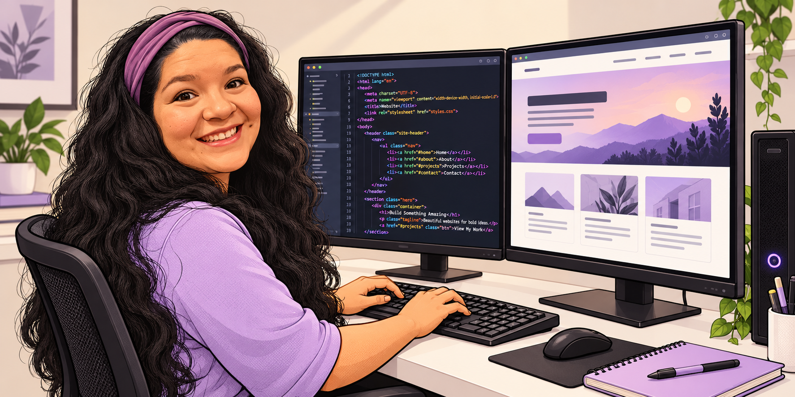

Morelia Media LLC Portfolio
Hello,
I'm Morelia, a website designer helping local businesses show up online.

Websites|Social Media| Square
About Me
Hi, I’m Morelia!
Growing up as the daughter of an entrepreneur, I was always helping with a family business—from sweeping the hair salon at ten to developing recipes for our paletería. Those experiences inspired me to help other small businesses bring their ideas to life.
Through Morelia Media LLC, I design websites, create social media content, and help set up point-of-sale systems. I enjoy working with business owners and making the technical side feel a little less overwhelming.
Professional History
I have worked in construction (installing insulation and dry wall), retail (sales and setting up point of sale), the service industry (setting up hair salon operations), and engineering (manufacturing and laboratory environments). I have experience creating content for several industries, including safety signage for laboratories, quality guidelines for manufacturing operations, training videos for engineers and technicians, social media video for soccer leagues and small buisnesses in New Mexico.
Core Skill Set
- Website design: Building responsive, easy-to-navigate websites using HTML, CSS, and JavaScript.
- Content creation: Photography, video filming, and editing.
- Social media: Creating business pages, promotional visuals, and content ideas.
- Business technology: Helping set up point-of-sale systems.
Professional Highlights
- Built and deployed websites for www.yerberiasantafe.com and www.moreliamedia.com.
- Filmed and edited social media content for Albuquerque Soccer League and Freds Worms.
- Photographed game-day content for Albuquerque Soccer League.
- Installed safety signage in a chemical lab space for technicians and engineers.
- Filmed training videos for technicians and engineers.
Portfolio section here
image left, text right add button that links to the topic
image right, text left add button that links to the topic
image left, text right add button that links to the topic
footer